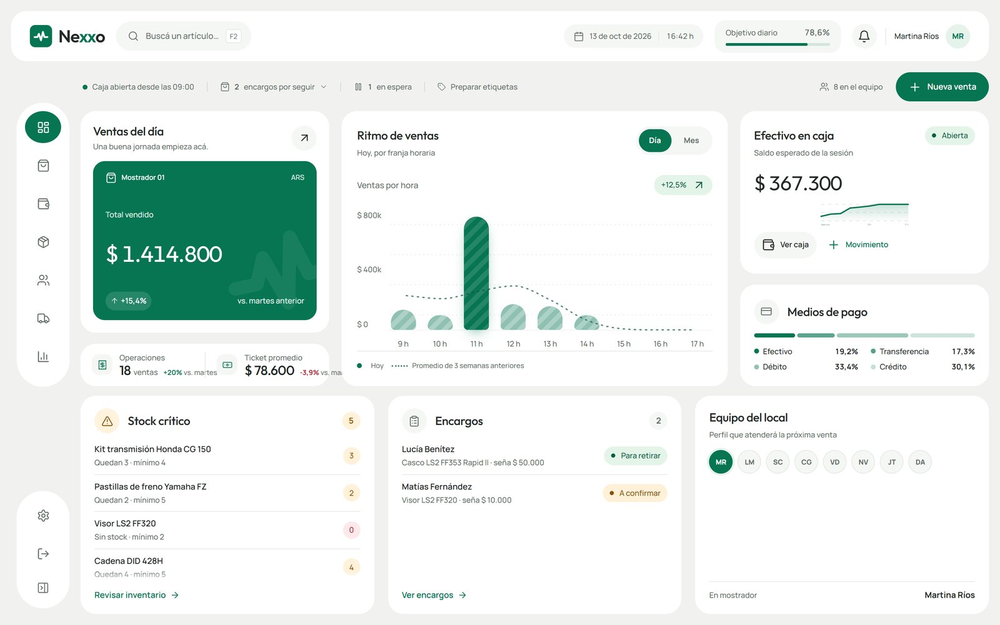
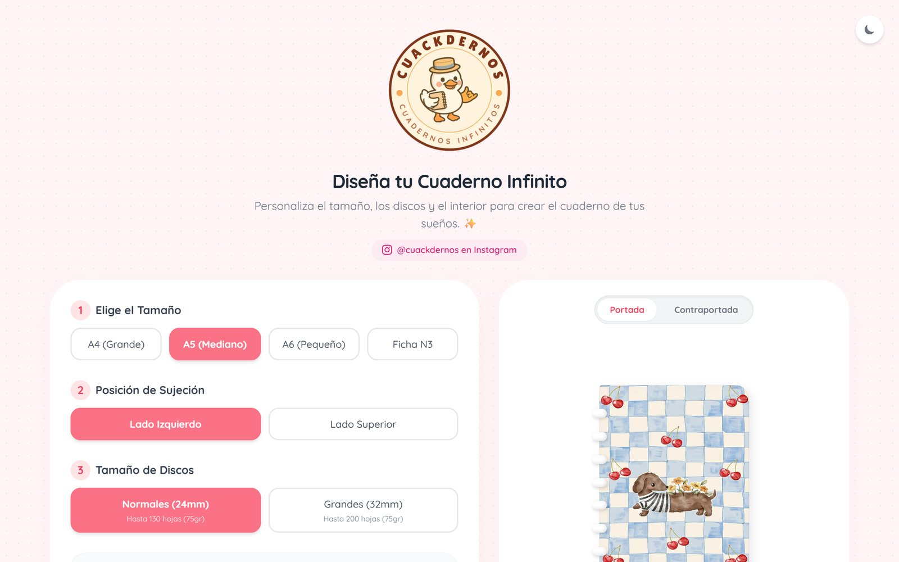

Proyectos
Lo que vengo haciendo
Cada ficha cuenta el problema, qué hice y hasta dónde llega.

Nexxo
Sistema de gestión para un comercio de motos y repuestos, con ventas, stock, caja y encargos en un mismo programa.
- Python
- FastAPI
- PostgreSQL
- React

Simuladores de circuitos eléctricos
Simuladores y material de estudio que se usan desde el navegador.
- HTML
- CSS
- JavaScript

Sitio web de Atuel Motos
Catálogo en línea de motos, cascos e indumentaria para un comercio de San Rafael, con simulador de cuotas.
- Astro
- TypeScript
- Supabase
- Cloudflare Workers
Intercambiador de calor de casco y tubos
Ocho simuladores en Python para diseñar y revisar un intercambiador metanol-agua.
- Python
- ht
- NumPy
- SciPy

Cuackdernos
Configurador web para diseñar un cuaderno de discos personalizado, ver cómo queda y encargarlo por WhatsApp.
- HTML
- JavaScript
- Tailwind CSS

MiBilletera
Aplicación web de finanzas personales, con movimientos, tarjetas en cuotas, gastos fijos y ahorro.
- JavaScript
- Tailwind CSS
- Chart.js

Triángulo de Oswald
Herramienta web para analizar una combustión con el diagrama de Oswald.
- HTML
- JavaScript
- Canvas

Capacidad dinámica de una línea aérea
Estudio preliminar de cuánta corriente admite una línea existente según el clima de cada hora.
- Python
- NumPy
- Matplotlib
Simulador de neutro flotante
Muestra qué tensiones aparecen cuando se corta el neutro con cargas desequilibradas.
- JavaScript
- Teorema de Millman
Sobre mí
Hola, soy Nico.
Me recibí de técnico electricista en 2020 y al año siguiente volví a la misma escuela, como docente de Circuitos Eléctricos. En paralelo curso Ingeniería Electromecánica en la UTN San Rafael.
Además programo simuladores para mis clases, herramientas de cálculo y software a medida. En el software para terceros empiezo por sentarme con quien lo va a usar, para ver cómo trabaja.
Trayectoria
El recorrido
Tec.Nito
Empiezo a trabajar por mi cuenta en reparación de equipos, redes y armado de workstations. Lo sigo haciendo.
Técnico electricista
Escuela 4-124 Reynaldo Merín.
Ingeniería y docencia
Entro a Ingeniería Electromecánica en la UTN San Rafael y empiezo a dar Circuitos Eléctricos 1 y 2 en la escuela donde me recibí.
Tecnicatura Universitaria en Programación
Cursada completa entre 2022 y 2024.
Software y sitios a medida
Desarrollo un sistema de gestión para un comercio, que ya funciona en paralelo con el anterior, y sitios web para dos emprendimientos de San Rafael. Termino de cursar la carrera.
Ingeniería
- Mathcad
- AutoCAD
- Autodesk Inventor
- Excel
Programación
- Python
- JavaScript
- TypeScript
- React
- FastAPI
- PostgreSQL
Herramientas
- Git
- GitHub
- Arduino
- PowerShell
Contacto
Hablemos
Si querés saber más de algún proyecto o tenés una propuesta, escribime.